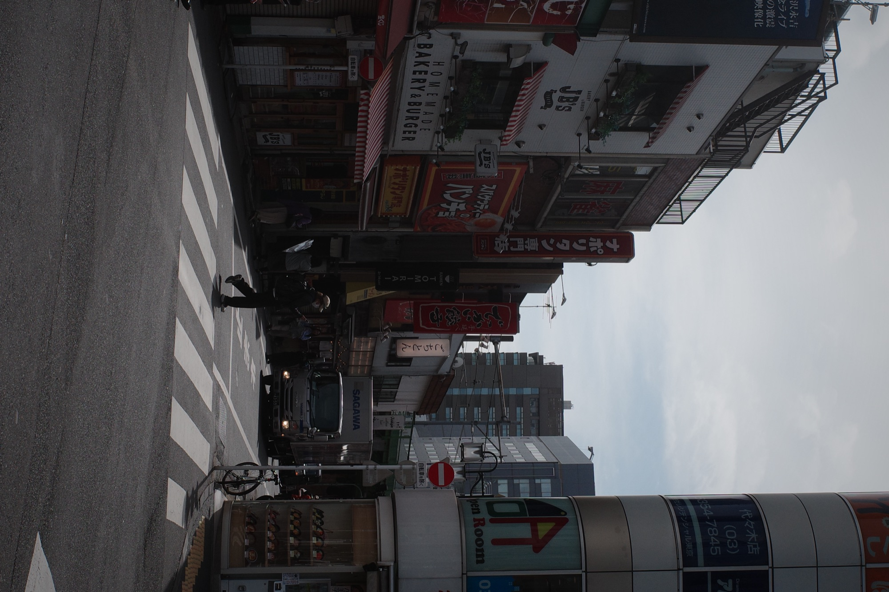
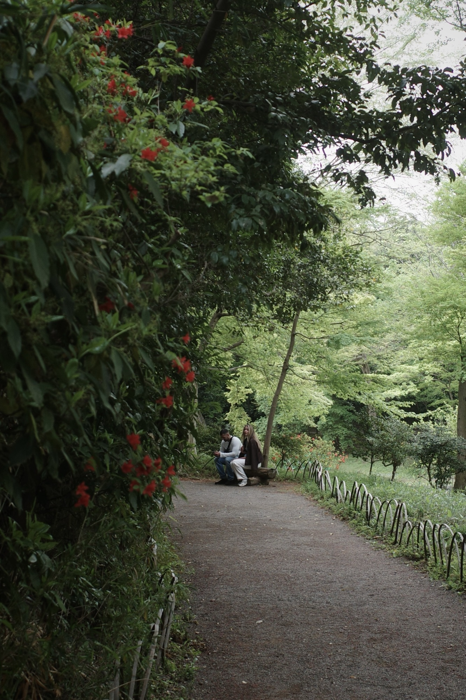
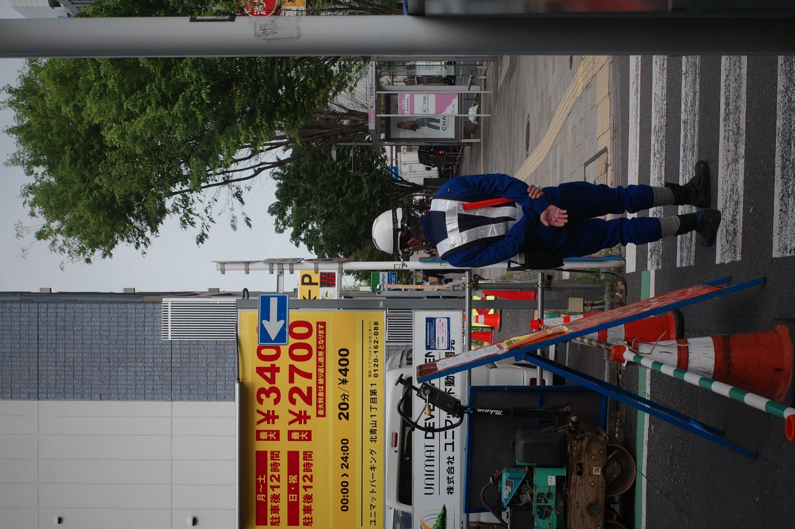
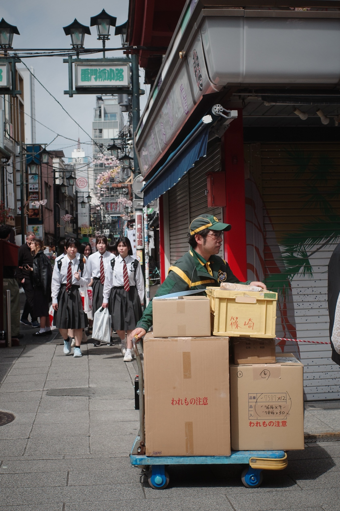
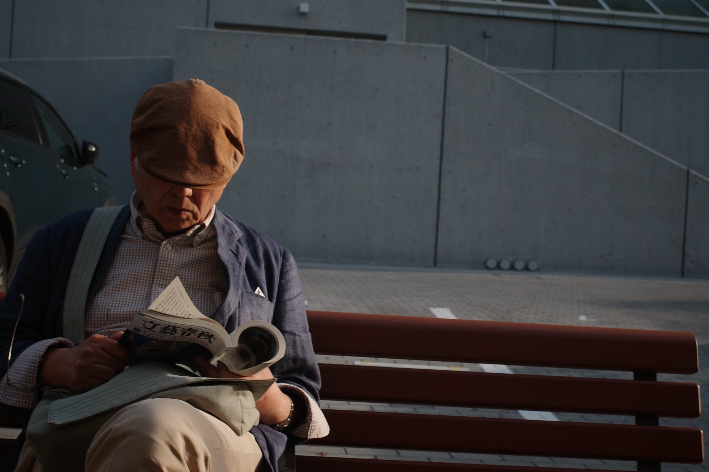

Appena atterrato a Tokyo, mi sono accorto di non avere una carta di credito funzionante e, la prima cosa che ho pensato, è che non mi ricordo più come si viaggi.
La partenza lunga, la preparazione ad un'avventura, la valigia incerta. Mi sono trovato in un posto nuovo, completamente diverso da qualsiasi altro avessi già conosciuto, e non mi ricordavo più come si facesse.
O forse non l'ho mai davvero saputo. I viaggi più grandi della mia vita sono stati viaggi di vita, nel senso più vero del termine. Vita vissuta, lunga, noiosa, fatta di abitudini quotidiane, posti esotici o sconosciuti o lontani dal mio vissuto; ma pur sempre pezzi di vita.
Questo viaggio mi ha colpito alla sprovvista dall'inizio, ma mi ha ricordato perchè mi piace così tanto viaggiare. Mi piace farmi investire dalla cultura, dalla città, dall'aria che mi scorre intorno. Senza un vero percorso prestabilito, ma alla ricerca di una sensazione, di un attimo di normalità, alla scoperta di come sarebbe stata la mia vita se il mio DNA si fosse rivelato in quel lato di mondo.

Il primo approccio
Tokyo mi ha aperto le porte alla cultura giapponese per la prima volta nella mia vita, all'interno di un'ambiente da metropoli futuristica e allo stesso tempo tenacemente ancorata all'antico, al tradizionale. Un groviglio indefinito di metripolitane, che nasconde piccole stradine silenziose appena girato l'angolo.
Ed il primo esempio è stato il nostro appartamento a Shinjuku, quartiere turistico per eccellenza, simbolo della Tokyo moderna, ma comunque in una via silenziosa che sapeva donarti pace e serenità al rientro dalla giornata frenetica nella città. Ho amato fotografare le persone, e su questo si concentrerà questo mio primo blogpost, con un tentativo di catturare l'essenza nella quotidianità, nel vivere monotono e noioso. Ma che, ai miei occhi, celava una curiosità morbosa di un estraneo che vuole imbucarsi in un mondo non suo.



